Contexto
Según los datos proporcionados por el Hospital de Apoyo de Pomabamba, entre enero y julio se registraron 249 personas con anemia.
Sistema portátil basado en Arduino Uno para la estimación experimental y no invasiva del riesgo de anemia mediante señales ópticas y variables fisiológicas.
Proyecto desarrollado en Pomabamba, Áncash. La propuesta integra experimentación óptica, fotopletismografía, procesamiento de señales y variables fisiológicas.
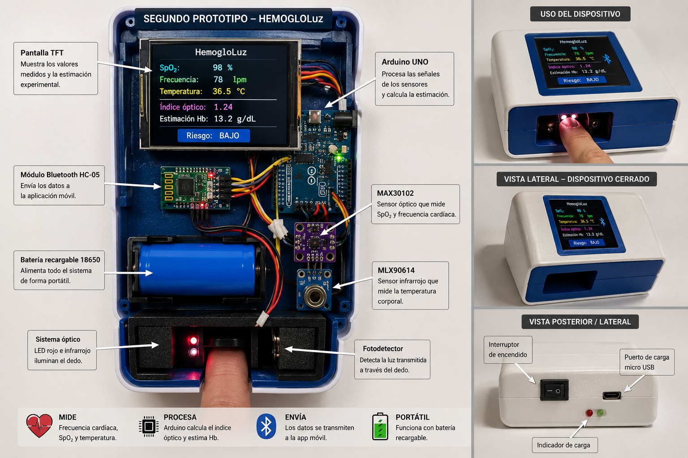
El informe identifica la anemia como una problemática que también afecta a comunidades rurales como Pomabamba y plantea una alternativa tecnológica accesible, portátil y no invasiva.
Según los datos proporcionados por el Hospital de Apoyo de Pomabamba, entre enero y julio se registraron 249 personas con anemia.
Investigar si la integración de señales ópticas y variables fisiológicas puede contribuir al tamizaje preventivo y a la estimación experimental del riesgo de anemia, sin sustituir los análisis clínicos ni establecer un diagnóstico médico.
El primero estudia el fenómeno óptico; el segundo traslada el principio a un sistema portátil sobre el dedo.

Utiliza tubos con soluciones de diferentes concentraciones, una fuente de luz y un fotodetector para estudiar concentración → absorción → intensidad luminosa.
Integra sensores, Arduino Uno, sistema óptico, pantalla TFT, Bluetooth y batería para adquirir y procesar señales.
Imágenes de los componentes ilustrados en el informe.
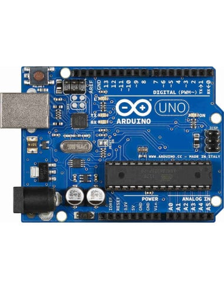
Recibe y procesa las señales de los sensores.

Adquiere señales PPG, frecuencia cardíaca y SpO₂.
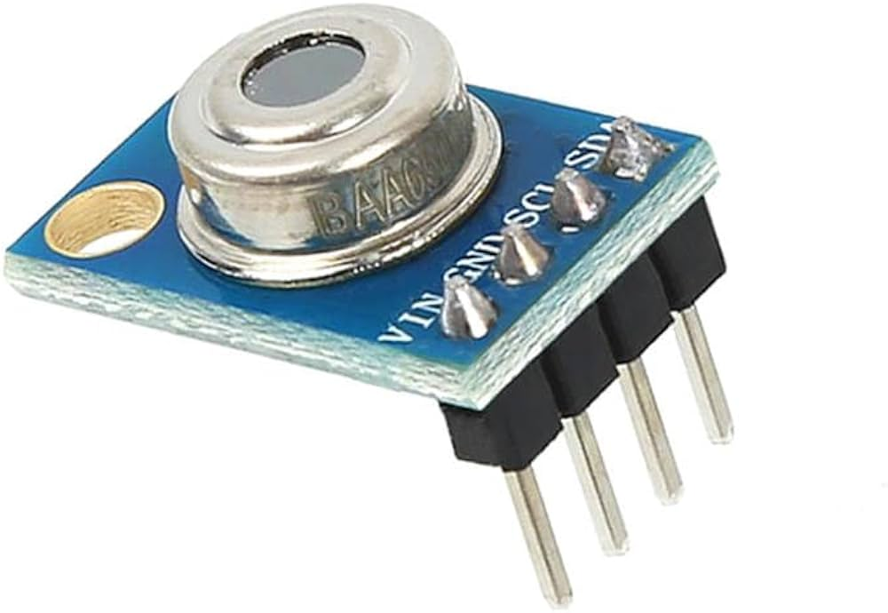
Mide la temperatura corporal sin contacto.
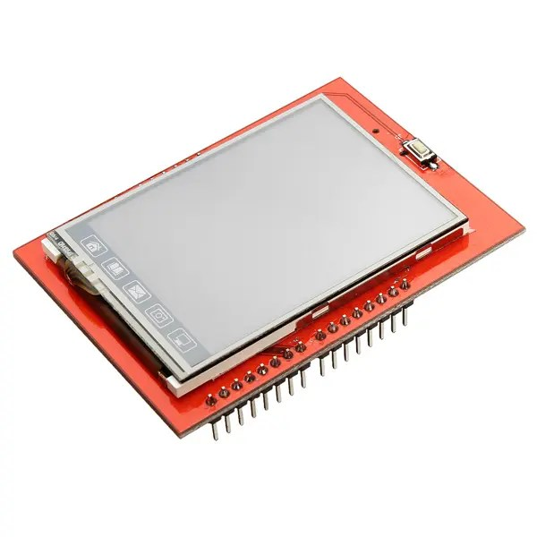
Muestra variables y resultados del prototipo.

Transmite información a la aplicación móvil.

Alimenta el sistema y permite su portabilidad.
La medición combina señales ópticas y variables fisiológicas; Arduino realiza adquisición, filtrado, promediado y cálculo experimental.
El sistema óptico utiliza luz roja e infrarroja sobre el dedo. La interacción de la luz con el tejido produce señales que son captadas para el análisis experimental.
El MAX30102 aporta PPG, frecuencia cardíaca y SpO₂; el MLX90614 aporta temperatura corporal.
Arduino Uno recibe las señales, aplica filtrado y promediado y calcula índices ópticos. La pantalla TFT muestra los resultados y el HC-05 permite transmitir información.
La ley de Beer-Lambert fundamenta el estudio de la absorbancia. Los parámetros de calibración deben estimarse con un conjunto de referencia documentado.
La tabla reproduce los 70 registros presentados en el informe, sin añadir datos externos.
Hb ref. ajustada = Hb de laboratorio − 1,8 g/dL. Este ajuste corresponde a la altitud de la referencia de laboratorio y no a una calibración del dispositivo.
| N.º | Hb laboratorio g/dL | Hb ref. ajustada g/dL | HemogloLuz H* g/dL | Error % | Resultado |
|---|---|---|---|---|---|
| 1 | 14.7 | 12.9 | 12.5 | 3.1 | Normal |
| 2 | 15.9 | 14.1 | 13.5 | 4.3 | Normal |
| 3 | 15.5 | 13.7 | 13.2 | 3.6 | Normal |
| 4 | 13.7 | 11.9 | 11.5 | 3.4 | Anemia leve |
| 5 | 13.6 | 11.8 | 11.3 | 4.2 | Anemia leve |
| 6 | 16.2 | 14.4 | 13.8 | 4.2 | Normal |
| 7 | 14.3 | 12.5 | 12.1 | 3.2 | Normal |
| 8 | 15.1 | 13.3 | 12.8 | 3.8 | Normal |
| 9 | 16.8 | 15.0 | 14.4 | 4.0 | Normal |
| 10 | 14.8 | 13.0 | 12.5 | 3.8 | Normal |
| 11 | 13.9 | 12.1 | 11.7 | 3.3 | Anemia leve |
| 12 | 15.7 | 13.9 | 13.3 | 4.3 | Normal |
| 13 | 16.1 | 14.3 | 13.7 | 4.2 | Normal |
| 14 | 14.5 | 12.7 | 12.2 | 3.9 | Normal |
| 15 | 15.3 | 13.5 | 13.0 | 3.7 | Normal |
| 16 | 17.0 | 15.2 | 14.5 | 4.6 | Normal |
| 17 | 14.2 | 12.4 | 12.0 | 3.2 | Normal |
| 18 | 15.8 | 14.0 | 13.4 | 4.3 | Normal |
| 19 | 16.4 | 14.6 | 14.0 | 4.1 | Normal |
| 20 | 14.0 | 12.2 | 11.8 | 3.3 | Anemia leve |
| 21 | 14.9 | 13.1 | 12.6 | 3.8 | Normal |
| 22 | 16.6 | 14.8 | 14.2 | 4.1 | Normal |
| 23 | 15.4 | 13.6 | 13.0 | 4.4 | Normal |
| 24 | 14.1 | 12.3 | 11.9 | 3.3 | Anemia leve |
| 25 | 16.9 | 15.1 | 14.4 | 4.6 | Normal |
| 26 | 15.2 | 13.4 | 12.9 | 3.7 | Normal |
| 27 | 14.6 | 12.8 | 12.3 | 3.9 | Normal |
| 28 | 16.0 | 14.2 | 13.6 | 4.2 | Normal |
| 29 | 15.6 | 13.8 | 13.2 | 4.3 | Normal |
| 30 | 14.0 | 12.2 | 11.7 | 4.1 | Anemia leve |
| 31 | 16.3 | 14.5 | 13.9 | 4.1 | Normal |
| 32 | 15.0 | 13.2 | 12.7 | 3.8 | Normal |
| 33 | 14.4 | 12.6 | 12.1 | 4.0 | Normal |
| 34 | 16.7 | 14.9 | 14.2 | 4.7 | Normal |
| 35 | 14.7 | 12.9 | 12.4 | 3.9 | Normal |
| 36 | 15.5 | 13.7 | 13.1 | 4.4 | Normal |
| 37 | 13.9 | 12.1 | 11.6 | 4.1 | Anemia leve |
| 38 | 16.5 | 14.7 | 14.0 | 4.8 | Normal |
| 39 | 15.1 | 13.3 | 12.8 | 3.8 | Normal |
| 40 | 14.8 | 13.0 | 12.5 | 3.8 | Normal |
| 41 | 16.2 | 14.4 | 13.8 | 4.2 | Normal |
| 42 | 15.7 | 13.9 | 13.3 | 4.3 | Normal |
| 43 | 14.3 | 12.5 | 12.0 | 4.0 | Normal |
| 44 | 16.9 | 15.1 | 14.4 | 4.6 | Normal |
| 45 | 15.3 | 13.5 | 13.0 | 3.7 | Normal |
| 46 | 14.6 | 12.8 | 12.3 | 3.9 | Normal |
| 47 | 16.0 | 14.2 | 13.6 | 4.2 | Normal |
| 48 | 15.8 | 14.0 | 13.4 | 4.3 | Normal |
| 49 | 14.1 | 12.3 | 11.8 | 4.1 | Anemia leve |
| 50 | 16.4 | 14.6 | 13.9 | 4.8 | Normal |
| 51 | 15.0 | 13.2 | 12.7 | 3.8 | Normal |
| 52 | 12.2 | 10.4 | 9.8 | 5.8 | Anemia moderada |
| 53 | 15.4 | 13.6 | 13.1 | 3.7 | Normal |
| 54 | 14.5 | 12.7 | 12.2 | 3.9 | Normal |
| 55 | 16.1 | 14.3 | 13.7 | 4.2 | Normal |
| 56 | 15.6 | 13.8 | 13.2 | 4.3 | Normal |
| 57 | 13.8 | 12.0 | 11.6 | 3.3 | Anemia leve |
| 58 | 16.7 | 14.9 | 14.2 | 4.7 | Normal |
| 59 | 14.9 | 13.1 | 12.6 | 3.8 | Normal |
| 60 | 15.4 | 13.6 | 13.0 | 4.4 | Normal |
| 61 | 16.3 | 14.5 | 13.9 | 4.1 | Normal |
| 62 | 14.2 | 12.4 | 12.0 | 3.2 | Normal |
| 63 | 15.9 | 14.1 | 13.5 | 4.3 | Normal |
| 64 | 14.7 | 12.9 | 12.4 | 3.9 | Normal |
| 65 | 16.5 | 14.7 | 14.0 | 4.8 | Normal |
| 66 | 15.2 | 13.4 | 12.9 | 3.7 | Normal |
| 67 | 14.0 | 12.2 | 11.7 | 4.1 | Anemia leve |
| 68 | 16.8 | 15.0 | 14.3 | 4.7 | Normal |
| 69 | 15.5 | 13.7 | 13.1 | 4.4 | Normal |
| 70 | 14.6 | 12.8 | 12.3 | 3.9 | Normal |
El informe señala que los 70 registros constituyen un conjunto experimental descriptivo. R² ≈ 0,997 describe la relación lineal dentro de este conjunto y no demuestra exactitud clínica ni equivalencia entre métodos. Se requiere calibración independiente y validación externa antes de cualquier aplicación clínica.
Imágenes de los anexos del informe: selección, diseño, pruebas, análisis y evaluación.
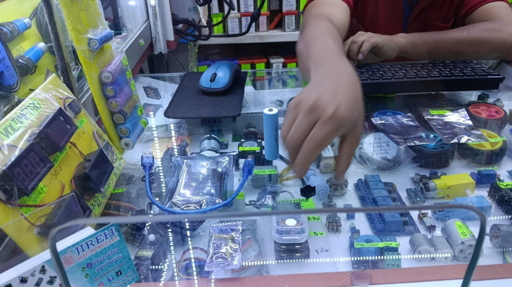
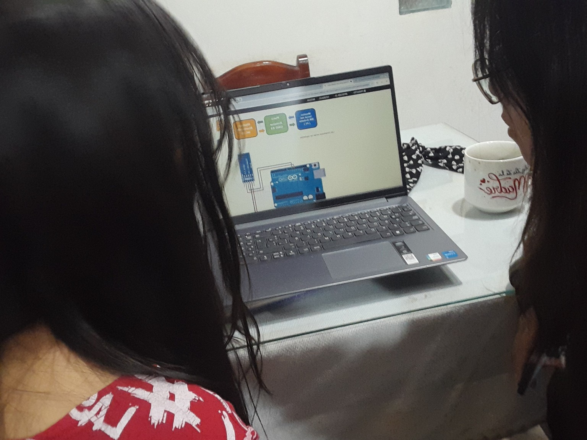
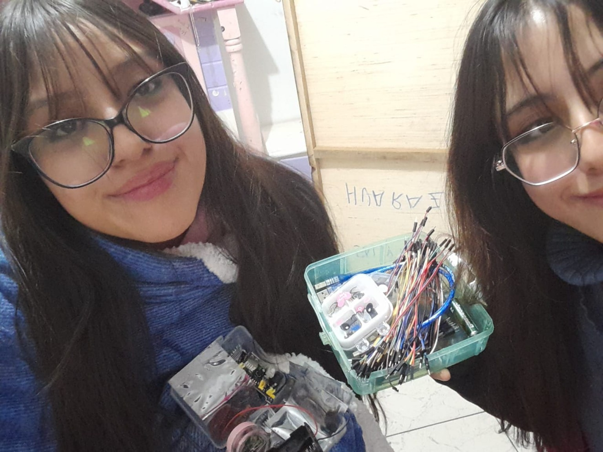
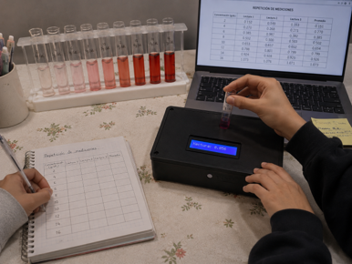
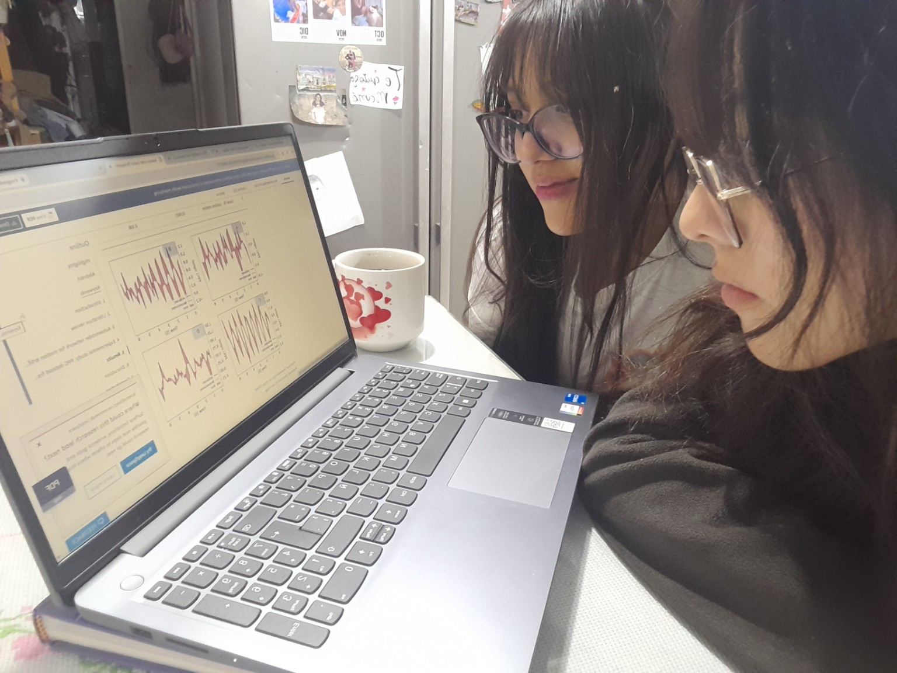
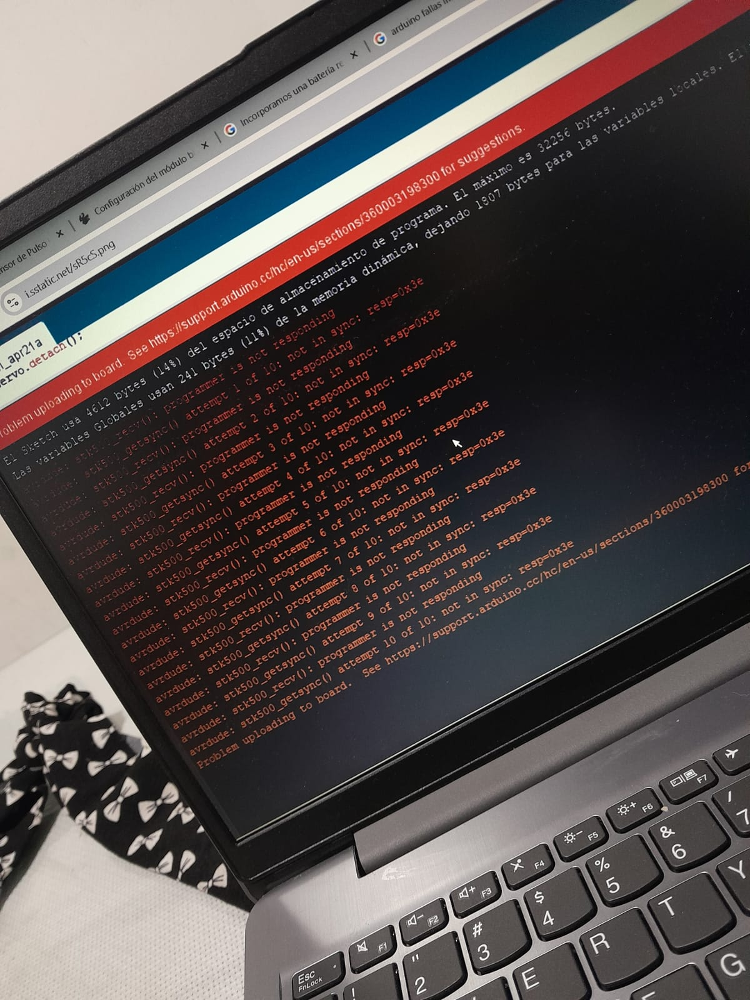
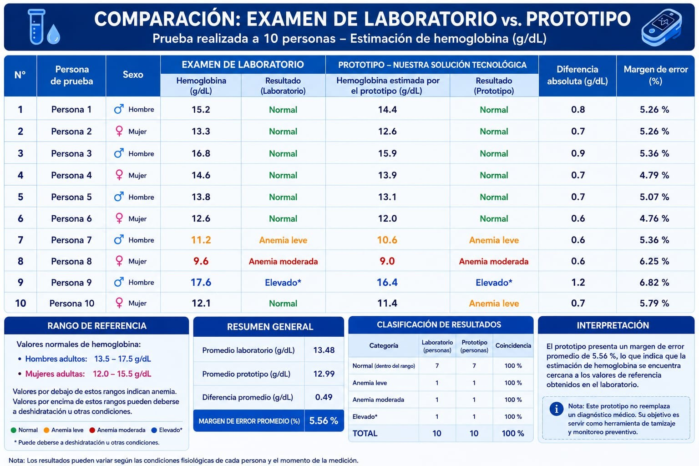
HemogloLuz permitió desarrollar una alternativa portátil y no invasiva para estudiar señales ópticas y variables fisiológicas relacionadas con la hemoglobina. El informe considera que las pruebas muestran funcionamiento técnico y evidencia experimental, pero señala que no sustituye el diagnóstico de laboratorio y que se necesita validación externa para futuras aplicaciones.